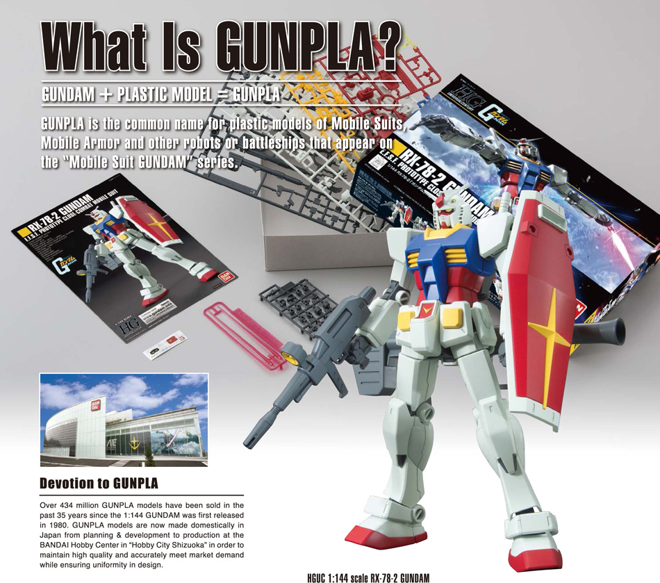
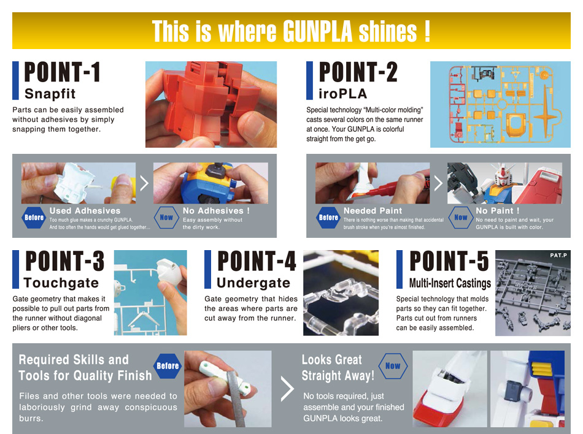
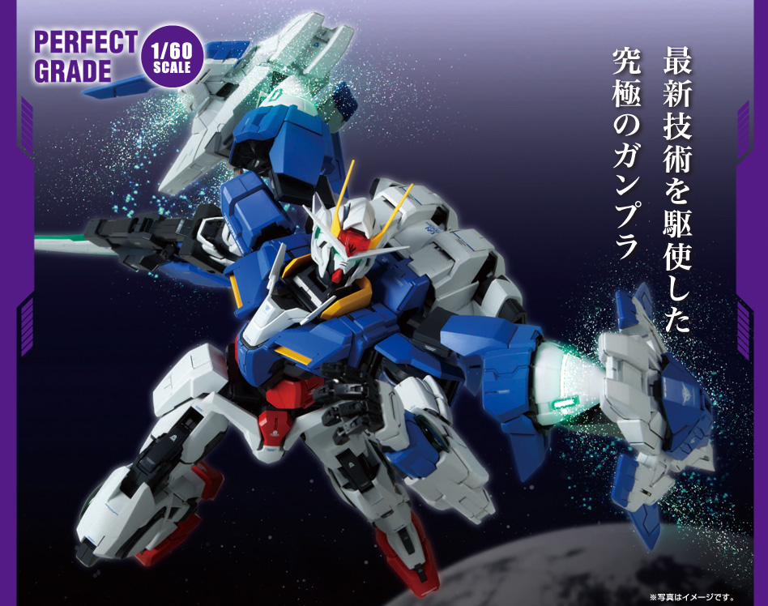
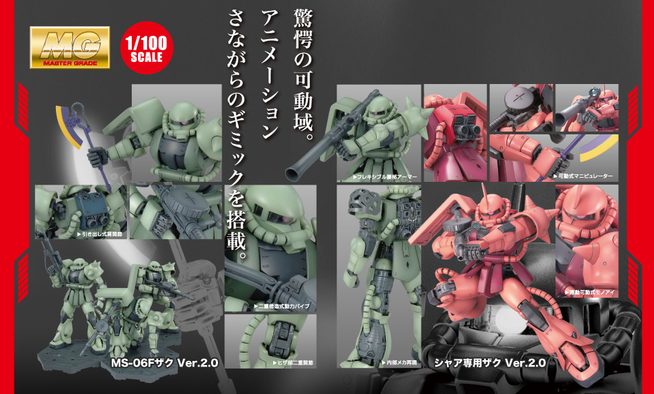
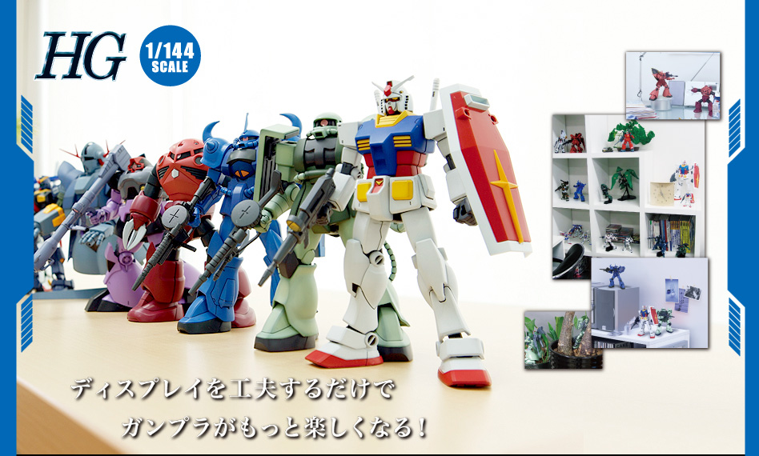
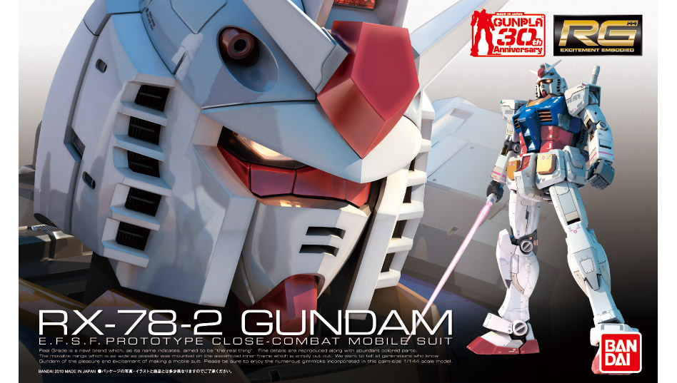
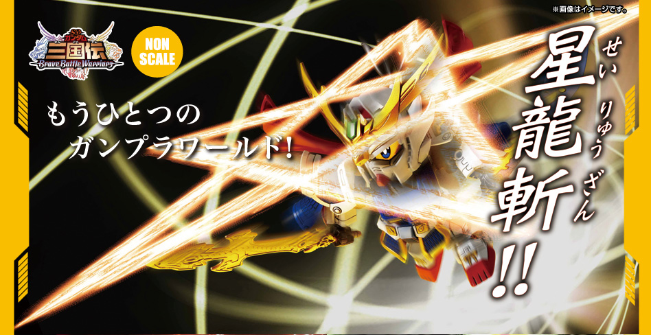

What is Gunpla?
Gunpla is Gundam + plastic model, it is from the Japanese word ガンプラ Ganpura, and it is manufactured by Bandai!
It is a plastic model depicting various mobile suit designs from different Gundam anime series that is built from the parts in the runners (the frame like things inside the box). You can basically build one with just your bare hands and a pair of cutting plies. (Better if they are really made to cut plastic).

Gunpla kits are categorized into 5 grades namely Perfect Grade (PG), Master Grade (MG), High Grade (HG), Real Grade (RG) and Super Deformed (SD).

Perfect Grade
Perfect Grades are the best kits that you can buy! They are
1/60 in scale, have the
best detail,
articulation and
part quantity. But they are also the most
expensive ones! They cost up to 26,500 Japanese Yen!

Master Grade
Master Grades have
great detail and
articulation, they are
1/100 in scale. They usually have
inner frames (the inner structure of the mobile suit). They are expensive too but not as expensive as the Perfect Grades. A hobbyist can buy one at an average price of 5,000 Japanese Yen.

High Grade
High Grades are the
cheapest and the most
collectible (that is of normal proportions) Gunpla that a hobbyist can buy! Although they have
less detail and
less articulation compared to MGs. Another thing is that they do not have
inner frames compared to MGs and PGs. They are
1/144 in scale. They cost around an average of 1,500 Japanese Yen.

Real Grade
The RG line combines the best aspects of the other three Gunpla lines: The 1/144 size and affordable prices of the High Grade, the advanced inner frame technology of the Master Grade and the massive part count of the Perfect Grade. The RG line is known for the Advanced MS Joint where the inner frame of the suit is placed on a single gate for easy construction. Also, the RG line reflects what a mobile suit would look like if it were built in the present day.

Super Deformed
Super Deformed or commonly known as SDs are mobile suit models that are
chibi in size! They are short in size! And they have
large disproportional heads with reference to their small body and larger arms, hands, legs and feet. They are the cute version of mobile suit kits! They are also highly collectible in par with HGs since they are very cheap!